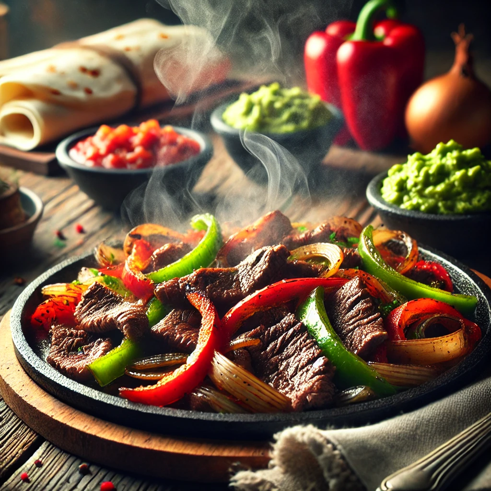

Sizzling Steak Fajitas

Can also be made with chicken or just vegetables!
A flavourful Tex-Mex dish with marinated steak, sautéed peppers, and onions served in warm tortillas.
Ingredients
- 450g flank steak, sliced into thin strips
- 1 bell pepper (red or green), sliced
- 1 onion, sliced
- 2 tbsp olive oil
- 2 cloves garlic, minced
- 1 tsp chilli powder
- 1 tsp ground cumin
- ½ tsp smoked paprika
- ½ tsp salt
- ½ tsp black pepper
- Juice of 1 lime
- 8 small flour tortillas
- Optional toppings: sour cream, guacamole, grated cheese, salsa
Steps
- In a bowl, mix steak strips with garlic, chilli powder, cumin, paprika, salt, pepper, and lime juice; marinate for at least 30 minutes.
- Heat 1 tbsp olive oil in a frying pan over medium-high heat, then cook the steak for 3-4 minutes per side until browned; remove from the pan.
- In the same pan, heat another tbsp of oil and sauté onions and peppers until softened, about 5 minutes.
- Return steak to the pan and stir to combine with veggies.
- Warm tortillas and serve the steak mixture with desired toppings.
Home